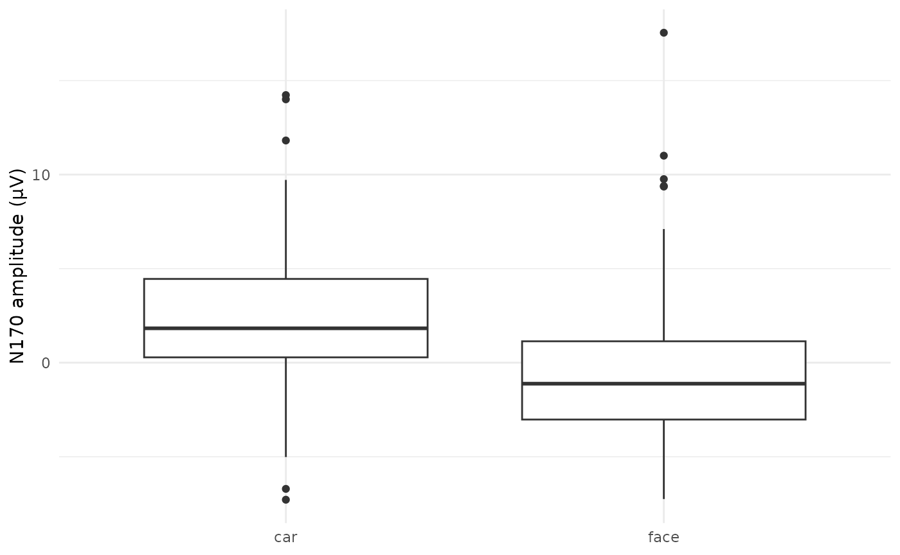

6. Extracting amplitudes
2023-01-03
Source:vignettes/v6-extracting-amplitudes.Rmd
v6-extracting-amplitudes.Rmd🎯 GOALS
Extracting one value (mean ERP amplitude) per trial for statistical modeling.
6.2 Select region of interest
Measures from a single EEG electrodes are noisy and spatially imprecise (e.g., volume conduction)
Averaging across nearby electrodes boosts signal-to-noise ratio
Region of interest (ROI) = the set of electrodes where we expect our ERP component of interest to be maximal
First convert epoched data to a data frame for subsequent subsetting / averaging:
dat_frame <- as.data.frame(dat_epo)
str(dat_frame)## 'data.frame': 38807 obs. of 39 variables:
## $ FP1 : num -13.34 -10.14 -5.91 -1.12 3.87 ...
## $ F3 : num -6.449 -3.412 0.585 4.984 9.169 ...
## $ F7 : num -10.8 -7.37 -3.07 1.42 5.56 ...
## $ FC3 : num -4.317 -2.094 0.764 3.824 6.642 ...
## $ C3 : num -2.811 -1.668 -0.152 1.4 2.644 ...
## $ C5 : num -5.837 -3.499 -0.432 2.744 5.384 ...
## $ P3 : num 0.122 -1.828 -3.89 -6.135 -8.614 ...
## $ P7 : num -10.07 -10.02 -8.46 -5.81 -2.87 ...
## $ P9 : num -13.72 -12.7 -9.91 -5.9 -1.53 ...
## $ PO7 : num -6.19 -7.56 -7.9 -7.58 -7.17 ...
## $ PO3 : num -1.11 -4.55 -7.79 -10.9 -14.03 ...
## $ O1 : num -4.32 -6.72 -8.71 -10.35 -11.81 ...
## $ Oz : num 4.89 3.63 1.08 -2.51 -6.63 ...
## $ Pz : num 10.69 7.22 2.1 -4.18 -10.81 ...
## $ CPz : num 4.17 2.94 1.16 -1.04 -3.56 ...
## $ FP2 : num -12.1 -8.98 -4.18 1.78 8.25 ...
## $ Fz : num -5.045 -2.258 0.979 4.279 7.297 ...
## $ F4 : num -5.72 -3.008 -0.373 1.964 4.019 ...
## $ F8 : num -6.59 -3.54 1.08 7.03 13.32 ...
## $ FC4 : num -1.34626 0.00036 0.8214 1.14019 1.24217 ...
## $ FCz : num -1.8832 0.0998 2.0119 3.6328 4.8811 ...
## $ Cz : num 2.05 2.59 2.58 2 1.01 ...
## $ C4 : num 3.901 3.665 2.415 0.497 -1.474 ...
## $ C6 : num 2.5101 2.4997 1.8454 0.8898 0.0752 ...
## $ P4 : num 14.75 10.73 4.63 -2.54 -9.47 ...
## $ P8 : num 16.99 15.39 12.96 10.36 8.17 ...
## $ P10 : num -0.28 0.041 0.833 2.21 4.076 ...
## $ PO8 : num 22.77 19.91 15.9 11.59 7.78 ...
## $ PO4 : num 20.97 15.39 7.44 -1.56 -10.06 ...
## $ O2 : num 8.14 5.22 1.6 -2.11 -5.35 ...
## $ HEOG_left : num -10.87 -8.692 -4.744 0.393 5.861 ...
## $ HEOG_right : num -7.167 -4.383 -0.193 4.904 10.125 ...
## $ VEOG_lower : num -5.99466 -3.45335 0.00347 4.00091 8.02498 ...
## $ time : num -0.199 -0.195 -0.191 -0.188 -0.184 ...
## $ epoch : num 1 1 1 1 1 1 1 1 1 1 ...
## $ participant_id: chr "sub-001_task-N170_eeg" "sub-001_task-N170_eeg" "sub-001_task-N170_eeg" "sub-001_task-N170_eeg" ...
## $ recording : chr "sub-001_task-N170_eeg" "sub-001_task-N170_eeg" "sub-001_task-N170_eeg" "sub-001_task-N170_eeg" ...
## $ event_type : num 79 79 79 79 79 79 79 79 79 79 ...
## $ epoch_labels : chr "car" "car" "car" "car" ...- Create a new “virtual” channel (i.e., column) containing the average signal in the ROI:
6.2 Select time window
ERP components unfold on the time scale of 10 ms to multiple 100s of ms
-
Select the time window where we expect our component to be (here: around 170 ms for the N170)
- Note: Region and time window of interest should be defined before looking at the data (i.e., preregistration)!
tmin <- 0.15
tmax <- 0.2
dat_frame <- subset(dat_frame, time >= tmin & time < tmax)-
Averaging across this time window gets us one value (mean ERP amplitude) per trail
- Carry over the
epoch_labels(coding the condition of each trial) and theevent_type(coding the specific stimulus that was presented)
- Carry over the
## 'data.frame': 151 obs. of 4 variables:
## $ epoch : num 72 105 30 108 26 61 147 38 100 11 ...
## $ event_type : num 41 41 42 42 43 44 44 45 45 46 ...
## $ epoch_labels: chr "car" "car" "car" "car" ...
## $ roi : num 1.08 2.54 4.1 2.52 4.54 ...- Quick box plot comparing the single trial mean ERP amplitudes for faces vs. cars:
ggplot(dat_trials, aes(x = condition, y = amplitude)) +
geom_boxplot() +
labs(x = NULL, y = "N170 amplitude (µV)") +
theme_minimal()
We’ll quantify this effect using statistical modeling in Vignette 7
Save the single trial data for later:
Further reading
Luck, S. J., & Gaspelin, N. (2017). How to get statistically significant effects in any ERP experiment (and why you shouldn’t). Psychophysiology, 54(1), 146–157. https://doi.org/10.1111/psyp.12639
Paul, M., Govaart, G. H., & Schettino, A. (2021). Making ERP research more transparent: Guidelines for preregistration. International Journal of Psychophysiology, 164, 52–63. https://doi.org/10.1016/j.ijpsycho.2021.02.016
Add-on topics
6.3 Building a pipeline
- Download the data from all participant (leaving out
the
subjectargument inget_erpcore())
erpcore::get_erpcore(
component = "n170",
dest_path = bids_dir,
conflicts = "overwrite",
type = "bids"
)-
Define a custom pipeline function, combining all processing steps
Input parameters: The EEG data (
.set) file + all processing optionsReturn value: A data frame with single trial mean ERP amplitudes (as above)
run_pipeline <- function(set_file,
montage = "biosemi64",
reref_chans = "average",
reref_exclude = c("HEOG_left", "HEOG_right", "VEOG_lower"),
filter_low_freq = 0.1,
filter_high_freq = 30.0,
downsample_factor = 4.0,
event_codes = c(1:80),
epoch_labels = c(rep("face", 40), rep("car", 40)),
epoch_time_lim = c(-0.2, 0.8),
baseline = c(-0.2, 0.0),
artifact_threshold = c(-100.0, 100.0),
erp_roi = c("P7", "P8", "P9", "P10", "PO7", "PO8"),
erp_time_lim = c(0.15, 0.2)) {
# From Vignette 3: Preprocessing
dat <- import_set(set_file)
dat <- electrode_locations(dat, montage = montage, overwrite = TRUE)
dat <- eeg_reference(dat, reref_chans, reref_exclude)
dat <- eeg_downsample(dat, downsample_factor)
# From Vignette 4: Creating epochs
dat <- epoch_data(dat, event_codes, epoch_time_lim, baseline, epoch_labels)
dat <- ar_thresh(dat, artifact_threshold, reject = TRUE)
# From Vignette 6: Extracting amplitudes
dat <- as.data.frame(dat)
dat$roi <- rowMeans(dat[roi])
tmin <- min(erp_time_lim)
tmax <- max(erp_time_lim)
dat <- subset(dat, time >= tmin & time < tmax)
dat <- aggregate(roi ~ epoch + event_type + epoch_labels, dat, mean)
names(dat) <- c("epoch", "stimulus", "condition", "amplitude")
return(dat)
}- Find all the
.setEEG files inside our BIDS directory (including sub-directories):
(set_files <- list.files(
bids_dir,
pattern = "\\.set$",
recursive = TRUE,
full.names = TRUE
))## [1] "/home/runner/work/eegSeminaR/eegSeminaR/data/n170/sub-001/eeg/sub-001_task-N170_eeg.set"
## [2] "/home/runner/work/eegSeminaR/eegSeminaR/data/n170/sub-002/eeg/sub-002_task-N170_eeg.set"
## [3] "/home/runner/work/eegSeminaR/eegSeminaR/data/n170/sub-003/eeg/sub-003_task-N170_eeg.set"
## [4] "/home/runner/work/eegSeminaR/eegSeminaR/data/n170/sub-004/eeg/sub-004_task-N170_eeg.set"
## [5] "/home/runner/work/eegSeminaR/eegSeminaR/data/n170/sub-005/eeg/sub-005_task-N170_eeg.set"
## [6] "/home/runner/work/eegSeminaR/eegSeminaR/data/n170/sub-006/eeg/sub-006_task-N170_eeg.set"
## [7] "/home/runner/work/eegSeminaR/eegSeminaR/data/n170/sub-007/eeg/sub-007_task-N170_eeg.set"
## [8] "/home/runner/work/eegSeminaR/eegSeminaR/data/n170/sub-008/eeg/sub-008_task-N170_eeg.set"
## [9] "/home/runner/work/eegSeminaR/eegSeminaR/data/n170/sub-009/eeg/sub-009_task-N170_eeg.set"
## [10] "/home/runner/work/eegSeminaR/eegSeminaR/data/n170/sub-010/eeg/sub-010_task-N170_eeg.set"
## [11] "/home/runner/work/eegSeminaR/eegSeminaR/data/n170/sub-012/eeg/sub-012_task-N170_eeg.set"
## [12] "/home/runner/work/eegSeminaR/eegSeminaR/data/n170/sub-013/eeg/sub-013_task-N170_eeg.set"
## [13] "/home/runner/work/eegSeminaR/eegSeminaR/data/n170/sub-014/eeg/sub-014_task-N170_eeg.set"
## [14] "/home/runner/work/eegSeminaR/eegSeminaR/data/n170/sub-015/eeg/sub-015_task-N170_eeg.set"
## [15] "/home/runner/work/eegSeminaR/eegSeminaR/data/n170/sub-016/eeg/sub-016_task-N170_eeg.set"
## [16] "/home/runner/work/eegSeminaR/eegSeminaR/data/n170/sub-017/eeg/sub-017_task-N170_eeg.set"
## [17] "/home/runner/work/eegSeminaR/eegSeminaR/data/n170/sub-018/eeg/sub-018_task-N170_eeg.set"
## [18] "/home/runner/work/eegSeminaR/eegSeminaR/data/n170/sub-019/eeg/sub-019_task-N170_eeg.set"
## [19] "/home/runner/work/eegSeminaR/eegSeminaR/data/n170/sub-020/eeg/sub-020_task-N170_eeg.set"
## [20] "/home/runner/work/eegSeminaR/eegSeminaR/data/n170/sub-021/eeg/sub-021_task-N170_eeg.set"
## [21] "/home/runner/work/eegSeminaR/eegSeminaR/data/n170/sub-022/eeg/sub-022_task-N170_eeg.set"
## [22] "/home/runner/work/eegSeminaR/eegSeminaR/data/n170/sub-023/eeg/sub-023_task-N170_eeg.set"
## [23] "/home/runner/work/eegSeminaR/eegSeminaR/data/n170/sub-024/eeg/sub-024_task-N170_eeg.set"
## [24] "/home/runner/work/eegSeminaR/eegSeminaR/data/n170/sub-025/eeg/sub-025_task-N170_eeg.set"
## [25] "/home/runner/work/eegSeminaR/eegSeminaR/data/n170/sub-026/eeg/sub-026_task-N170_eeg.set"
## [26] "/home/runner/work/eegSeminaR/eegSeminaR/data/n170/sub-027/eeg/sub-027_task-N170_eeg.set"
## [27] "/home/runner/work/eegSeminaR/eegSeminaR/data/n170/sub-028/eeg/sub-028_task-N170_eeg.set"
## [28] "/home/runner/work/eegSeminaR/eegSeminaR/data/n170/sub-029/eeg/sub-029_task-N170_eeg.set"
## [29] "/home/runner/work/eegSeminaR/eegSeminaR/data/n170/sub-030/eeg/sub-030_task-N170_eeg.set"
## [30] "/home/runner/work/eegSeminaR/eegSeminaR/data/n170/sub-031/eeg/sub-031_task-N170_eeg.set"
## [31] "/home/runner/work/eegSeminaR/eegSeminaR/data/n170/sub-032/eeg/sub-032_task-N170_eeg.set"
## [32] "/home/runner/work/eegSeminaR/eegSeminaR/data/n170/sub-033/eeg/sub-033_task-N170_eeg.set"
## [33] "/home/runner/work/eegSeminaR/eegSeminaR/data/n170/sub-034/eeg/sub-034_task-N170_eeg.set"
## [34] "/home/runner/work/eegSeminaR/eegSeminaR/data/n170/sub-035/eeg/sub-035_task-N170_eeg.set"
## [35] "/home/runner/work/eegSeminaR/eegSeminaR/data/n170/sub-036/eeg/sub-036_task-N170_eeg.set"
## [36] "/home/runner/work/eegSeminaR/eegSeminaR/data/n170/sub-037/eeg/sub-037_task-N170_eeg.set"
## [37] "/home/runner/work/eegSeminaR/eegSeminaR/data/n170/sub-038/eeg/sub-038_task-N170_eeg.set"
## [38] "/home/runner/work/eegSeminaR/eegSeminaR/data/n170/sub-039/eeg/sub-039_task-N170_eeg.set"
## [39] "/home/runner/work/eegSeminaR/eegSeminaR/data/n170/sub-040/eeg/sub-040_task-N170_eeg.set"- Apply the pipeline function to each
.setfile, returning a list of data frames (one for each participant)
dats_group <- lapply(set_files, run_pipeline)-
Combine all data frames into one big data frame:
- Adding an ID column to keep track which trials belong to which participant
## participant epoch stimulus condition amplitude
## 1 1 105 41 car 2.1057134
## 2 1 8 56 car -4.2724834
## 3 1 7 59 car 7.9375438
## 4 1 153 62 car -0.9975663
## 5 1 104 63 car 13.9909229
## 6 1 13 65 car 0.6623084- Save for later: